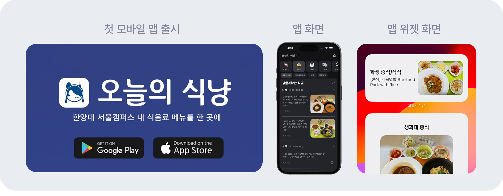
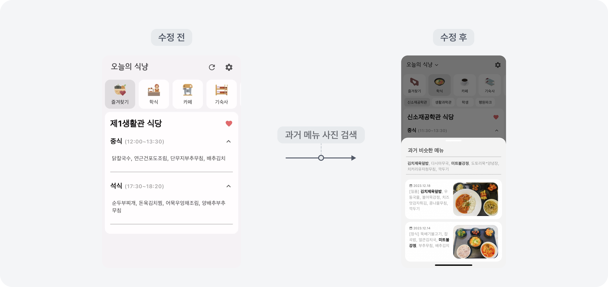

안녕하세요!
한양대학교 학식 앱, 오늘의 식냥 이야기예요. 첫 제품에서 문제를 고르는 기준과 통제할 수 없는 데이터를 다루는 법을 배웠어요.

강도 대신 빈도를 골랐어요
후보는 두 개였어요. 교내 길 찾기와 학식 메뉴 확인.
학생 인터뷰에선 길 찾기 쪽 반응이 훨씬 좋았어요. 강의실을 못 찾아 헤맨 기억은 누구나 있으니까요. 그런데 실제 사용 상황을 그려보다 이상한 지점을 발견했어요. 신입생도 2주면 건물 위치를 익히더라고요. 문제의 강도는 센데 겪는 기간이 학기 초 몇 주뿐이었던 거죠.
학식은 달랐어요. 식당마다 홈페이지가 달라서 메뉴를 확인하려면 여러 페이지를 돌아야 했고, 하루 두세 번, 학기 내내 반복됐어요.
‘이 문제는 얼마나 자주, 오랫동안 반복될까?’
저희는 공감대가 큰 문제 대신 반복되는 문제를 골랐어요. 그때는 감이었는데, 지금도 문제의 중요도를 판단하는 기준이 되었죠.
통제할 수 없는 데이터를 다루는 법
출시 후 가장 큰 문제는 메뉴 사진이 자주 비어 있다는 거였어요. 영양사 선생님이 정해진 시간에 올리시는 게 아니었거든요. 사용자는 먹기 전에 확인하려고 앱을 켜는데, 정작 그 시간에 메뉴 사진이 없던 거죠.
이미지가 비면 화면 전체의 매력도가 급격히 떨어져요. 그러나 사진의 등록 시간은 통제할 수 없었어요. 대신 메뉴가 한 달 주기로 반복된다는 점을 봤어요.
스케줄러·스크래핑·히스토리 DB로 데이터를 상시 수집해두고, 메뉴명을 정규화해 과거 유사 메뉴 사진을 찾아 대체 노출했어요. 최신 사진을 대체하진 못하지만 빈 화면보다는 훨씬 나은 사용자 경험을 제공할 수 있었죠.

통제할 수 없는 데이터가 있다면 완벽한 해결을 기다리기보다 불확실성을 줄이는 대안을 내는 법을 배울 수 있었어요.
광고 대신 저장할 만한 콘텐츠
광고 예산이 없어서 학생들이 이미 모여 있는 채널만 골랐어요.
축제기획단 활동을 하며 알게 된 한대신문 관계자에게 직접 연락해 교내 매체에 실렸어요. 에브리타임에는 앱 홍보 대신 ‘한양대 생활 꿀팁’ 콘텐츠를 만들고 그 안에 앱을 추천 중 하나로 끼워 넣었고요. 그 게시물이 스크랩 약 800회를 기록하며 유입의 대부분을 만들었습니다.
이후로는 만드는 단계에서부터 유저가 우리 서비스를 어떤 경로로 접하게 될지를 같이 설계하게 됐어요.
남은 것
3년 뒤 학교가 공식 학식 인터페이스를 제공하면서 역할을 마쳤어요.
유지되지 못한 걸 실패로 보진 않아요. 저희가 찾은 문제가 실제로 존재했고, 학교가 공식적으로 같은 문제를 해결했다는 게 문제 선택이 옳았다는 증거이기도 하니까요.
다음 글완성된 제품 없이 수요를 증명할 수 있을까?